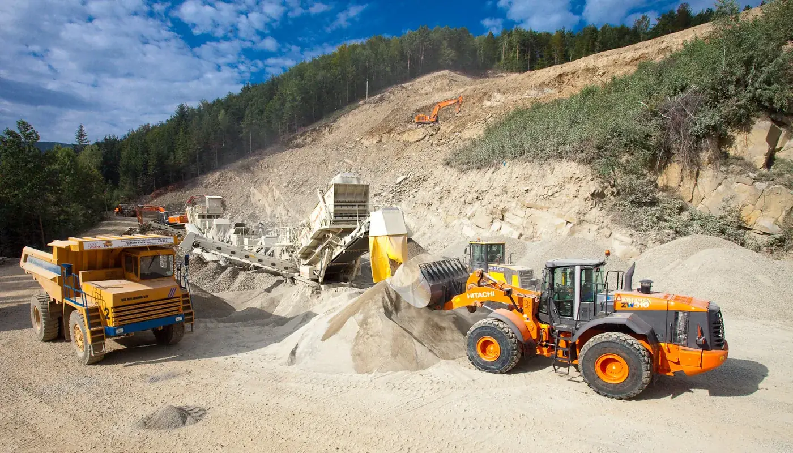
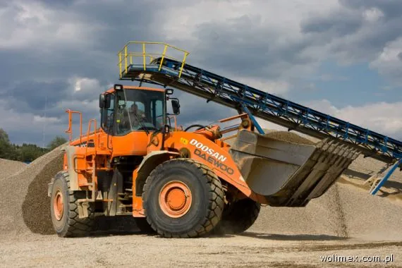
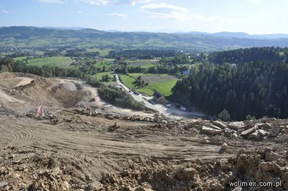
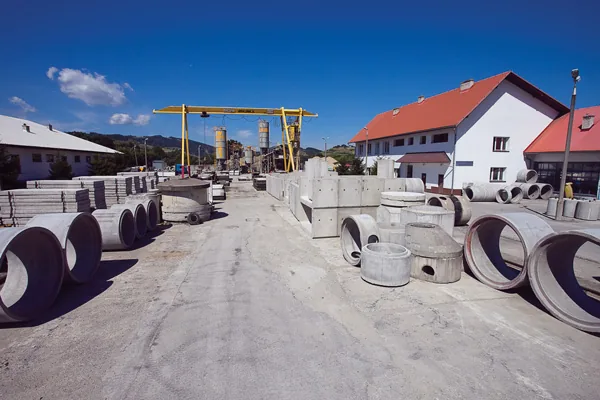
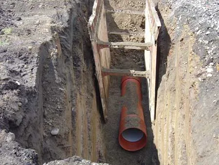
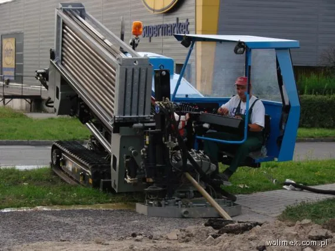
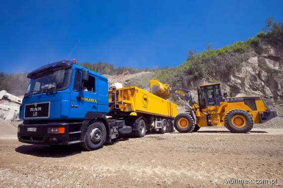
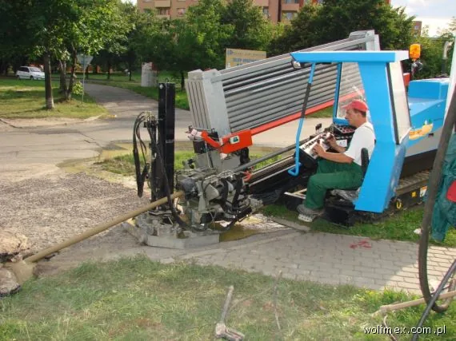

P.P.U.H. WOLIMEX, Limanowa
Infrastruktura, kruszywa i beton od 1984 roku
Sieci wodno-kanalizacyjne, roboty hydrotechniczne i przewierty bezwykopowe. Kruszywa z własnych złóż, wyroby betonowe i beton z pompą.
1984rok założenia firmy
597 kmkanalizacji w 23 wymienionych realizacjach
300 t/hwydajność linii kruszyw w Charzewicach
ISO9001 i 14001: jakość i środowisko
Co robimy
Pełna oferta





Technologie bezwykopowe
Pod drogą, torami i rzeką, bez rozkopywania
Przewierty sterowane do 200 m na jeden odcinek, średnice od 40 do 500 mm. Burstlining wymienia stare rury na nowe, także o większej średnicy, a kamera inspekcyjna pokazuje stan kanału metr po metrze.
Jak to robimy
Ostatnie duże realizacje
Wszystkie realizacje- 2009Kanalizacja sanitarna w Pszczynie, etap I (zaprojektowanie i wykonanie)ok. 61 000 m kanalizacji i ok. 74 000 m wodociągu
- 2008Kanalizacja sanitarna na terenie Gminy Miasto Tarnów (zaprojektowanie i wykonanie)ok. 41 000 mb
- 2007Kanalizacja sanitarna i oczyszczalnia ścieków w Międzybrodziu Bialskim35 000 mb sieci, oczyszczalnia Q = 600 m³/d
- 2007Kanalizacja sanitarna w dzielnicy Hałcnów, Bielsko-Białaok. 33 000 mb